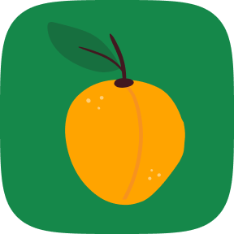
абрикос — маркетплейс для садоводов
[продуктовый дизайн/2023]
о проекте
абрикос — сервис, который соединяет покупателей и продавцов растений, облегчая поиск и покупку. Питомники могут размещать свои предложения о продаже различных видов растений, от декоративных до плодовых, а покупатели могут легко находить и приобретать растения в соответствии с их потребностями и предпочтениями.
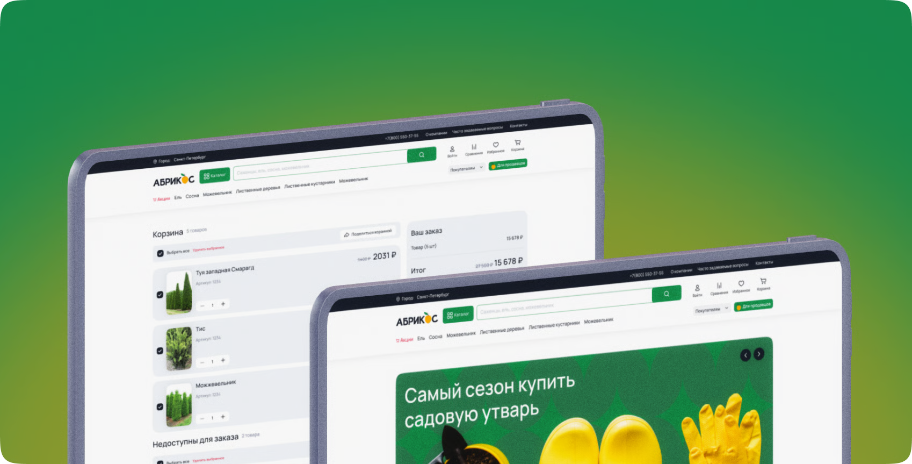
роль
Когда к нам пришёл клиент с желанием создать маркетплейс для b2b-клиентов, мы незамедлительно разделили наши обязанности в команде с другими дизайнерами. Всего нас было 3 человека на проекте; за визуал, исследования, общение с клиентами и проведение кик-оффов отвечал я.
первоначальная задача
перед нами стояла задача за небольшой промежуток времени запустить MVP-маркетплейс для садоводов, где они могли бы купить оптом нужный для них товар, создать CRM-систему личного кабинета продавца / покупателя. Утвердить логику входа/авторизации, прийти к нужному визуалу и многое другое
основные задачи
Бенчмаркинг конкурентов, поиск лучших решений
Согласование юзерфлоу, архитектуры проекта
Составление мудборда, поиск референсов, отрисовка вайрфреймов
Отрисовка вайрфреймов главного сценария, обсуждение и утверждение логики с дизайнерами, продуктами и стейкхолдерами
Отрисовка главного сценария, тестирование на пользователях, описание результатов
Тестирование прода на реальных юзерах
Задача 1
Первой задачей я выделил для себя проведение бенчмарка сторонних маркетплейсов, поиск лучших решений и интересных фич
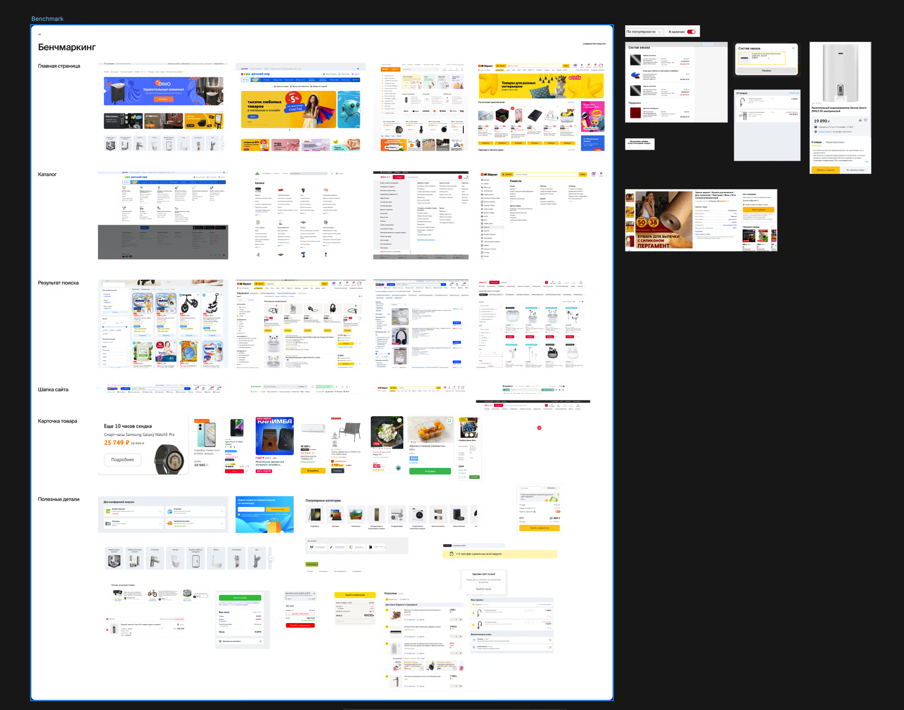
Итоги бенчмаркинга
Главный баннер на главной как бест-практис
Важно сделать акцент на кнопке «Каталог»
Сделать акцент на кнопке «Стать продавцом»
Лейаут сетки должен быть нелинейным, чтобы не наскучить
Большие и яркие баннеры как бест-практис
Выделение наших ключевых особенностей выносим на главную, после баннеров
Задача 2
Вторым, но не менее важным этапом выделил — согласование юзерфлоу и архитектуры MVP с последующим масштабированием
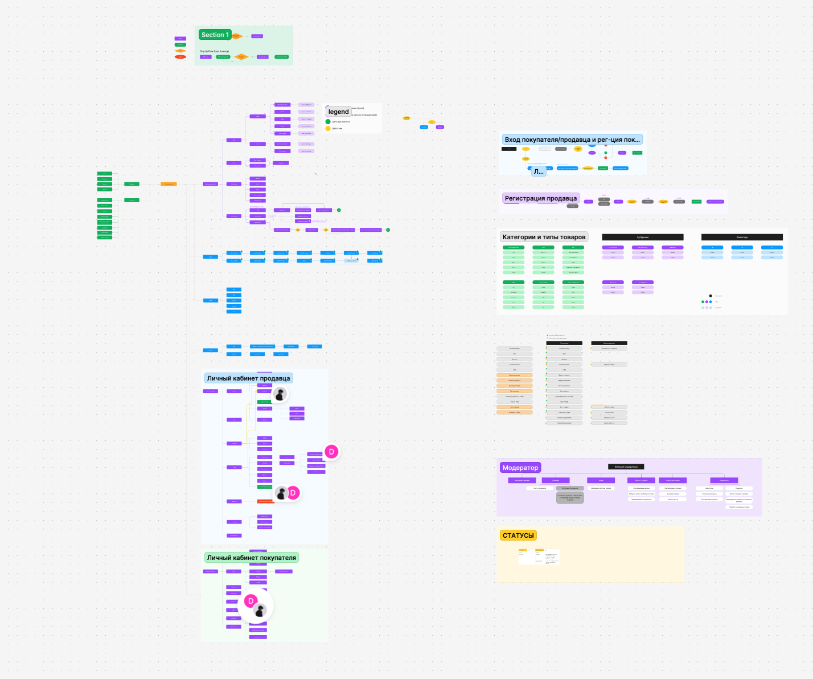
Задача 3
Третья задача наверное вышла самой простой: за 5 дней мы с командой собрали мудборд, референсы и начали всё собирать в один концепт
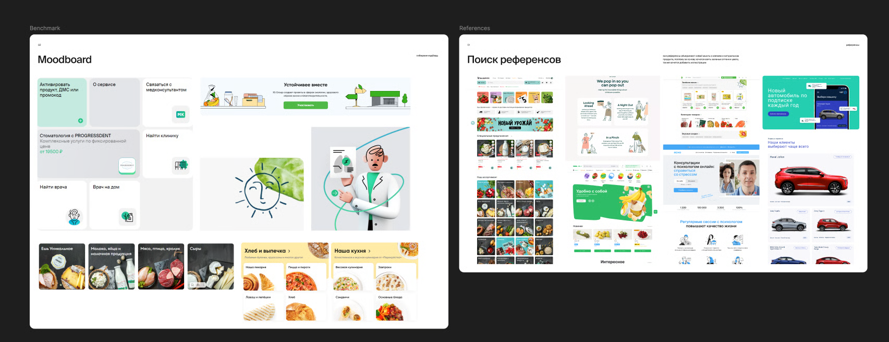
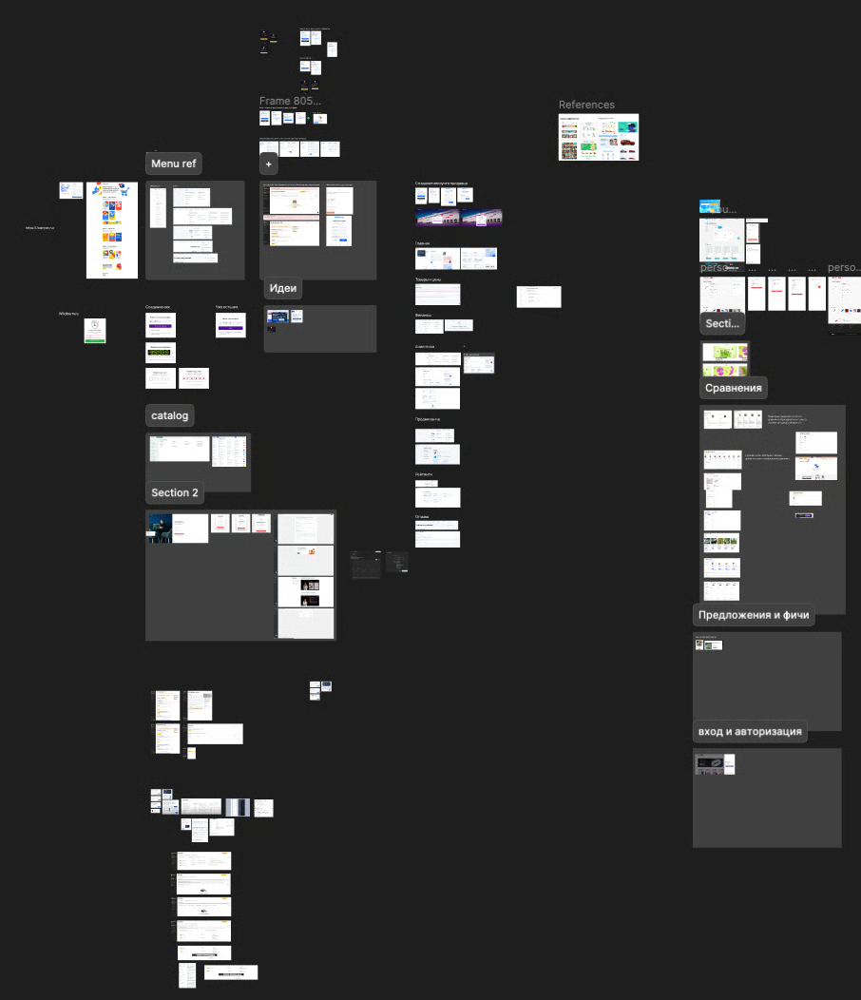
Задача 4
На этом этапе мы занимались отрисовкой вайрфреймов и согласованием логики основного сценария для MVP
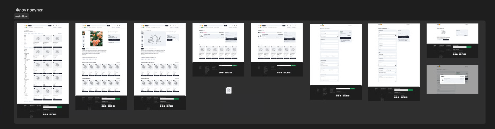
Проработка визуальной концепции, показ главной страницы заказчику. После апрува распределили обязанности между дизайнерами по отрисовке остальных сценариев по согласованному дизайну. Параллельно создание ui-kit сайта.
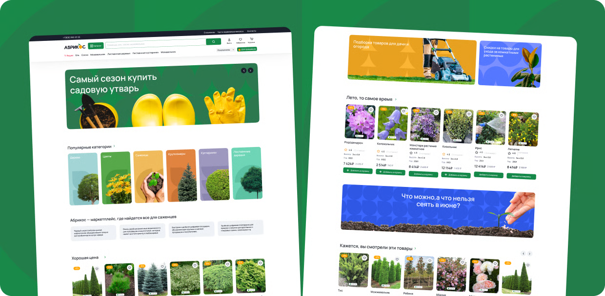
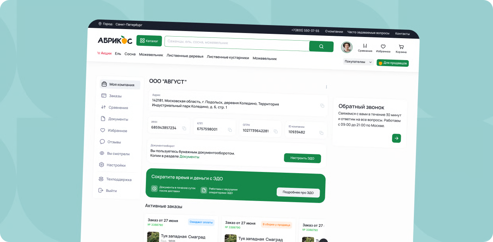
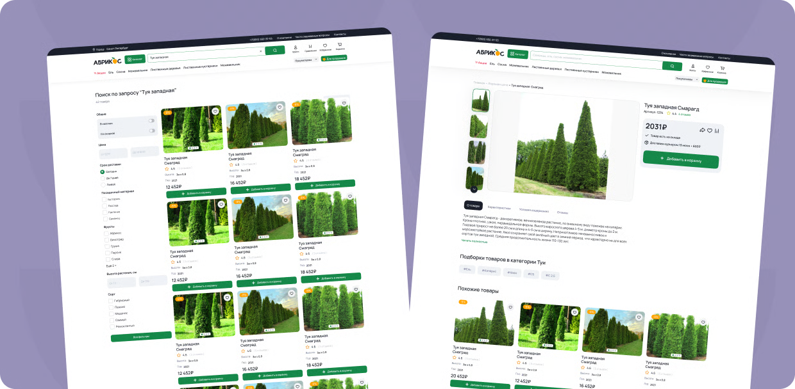
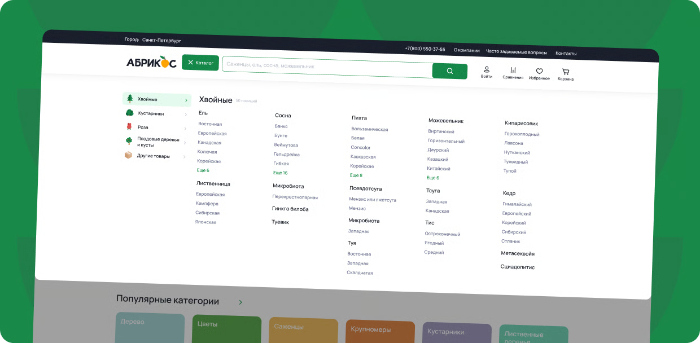
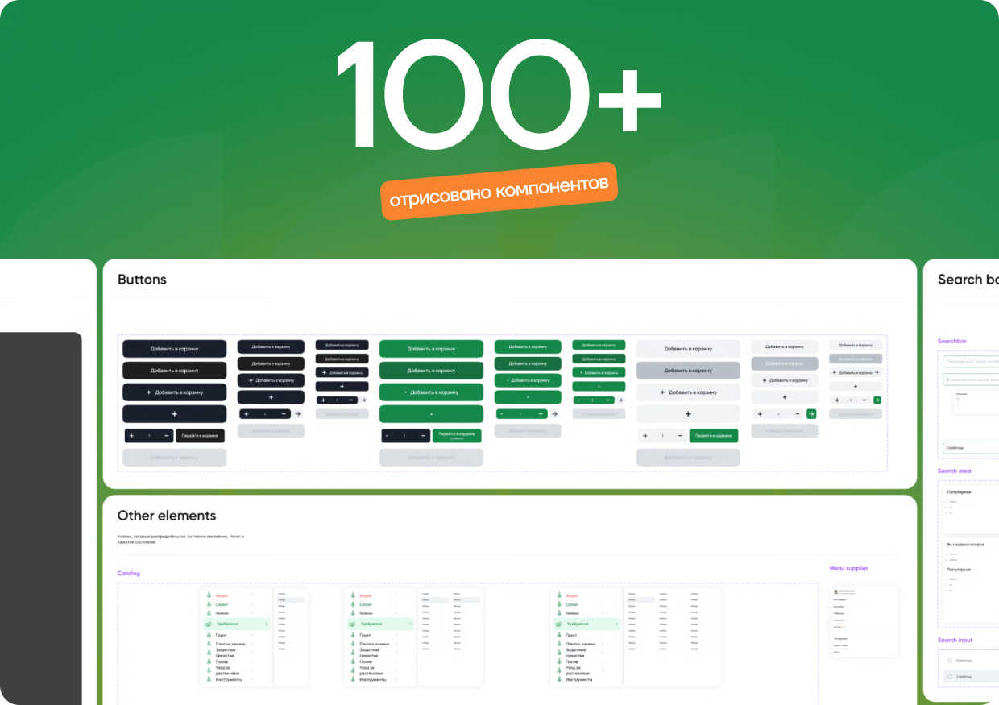
Результат работы
За несколько месяцев мы успели провести конкурентный анализ, проверили гипотезы, отрисовали 50+ макетов для разных сценариев, также успел отрисовать дизайн-систему. На данный момент проект находится в тестовом режиме. Важно понимать, что продукт сейчас находится на демо-стадии, поэтому работа по нему до сих пор ведётся
Полезные ссылки
Макет в Фигме — смотреть тут